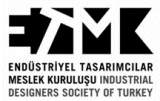
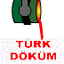

|
|
|
Linkler
> Yurt içi adresler:
|
|
|
|
Linkler > Yurt içi adresler
> Portallar: |
-
www.3dcatia.com > 3D CATIA, CATIA kullanýcýlarýna yönelik, bilgi, haber ve forumlar...
- www.3dimparatorlugu.com > 3ds max eðitim videolarý ve forumlar..
- www.3dsinifi.com > 3D Sýnýfý > 3ds Max, Maya, XSI, Ders....
- www.autocadhocasi.com > AutoCAD Hocasý
- www.autocadokulu.com > AutoCAD Destek Merkezi
- www.autocadokulu.net > AutoCAD Dersleri, 3ds max, SolidWorks...
- http://turk.internet.com/category.php?cat=58 Turk.internet.com > Yazýlým > CAD/CAM
- www.cadcamsektoru.com > CAD/CAM Sektörünün Portalý... Bursa Tophane Teknik Lisesi CNC Bölümü mezunu Metin Yavuz tarafýndan 01 Kasým 2007 tarihinde kurulmuþtur.
- www.cadcam67.com
> Zonguldak EML CNC Bölümü'nce hazýrlanmýþ SolidWorks,
Cimatron, CAD/CAM, CNC ve DNC konularýnda ders notlarý içeren
bir site
- www.cadokulu.com
> AutoCAD Dersleri ve CAD/CAM Forumlarý (AutoCAD, CATIA,
Inventor, Mastercam, Pro/ENGINEER, SolidWorks, Unigraphics...
CNC Teknolojisi, Donaným...)
- www.cncikinciel.com
> Ýkinci el CNC makine ve üniversal tezgah e-market platformu
- www.cnchaber.com > CNC Haber
- www.cnckesim.com > Türkiye'nin CNC kesim portalý
- www.cncturkey.com
> CNC makine, kesici karbür tkým e-market portalý
- www.designophy.com
> Designophy: Design Knowledge, Latest Design News & Competitions (Türk endüstriyel ürün tasarýmcýlarýnýn oluþturduðu Ýngilizce bir site)
- www.demircelik.com.tr > Turkiye'nin Demir Çelik Platformu
- www.etmk.org
> Endüstriyel Tasarýmcýlar Meslek Kuruluþu 
- www.dexigner.com
> Dexigner Tasarým Portalý
- www.fikironline.com > Fikironline Tasarým Portalý > Güncel tasarým haberleri
- www.hidrojenforumu.com
> Türk ulusunu hidrojen çaðýna hazýrlamayý amaçlayan
"Hidrojen Enerjisi Forumu" Elimsan Þirketler Grubu
içersinde faaliyet gösteren Hidrener Hidrojen Enerji Sistemleri
A.Þ. tarafýndan kurulmuþtur.
- www.ikincielmakina.gen.tr > Onur Plastik Ltd. Þti. ikinci el makine satýþ portalý
- www.jewelturk.net > JewelTurk.Net, Rhinoceros dersleri, kuyumculuk uygulamalarý ve forumlar...
- www.kalip.net
> Kalýpçýlýk Portalý
- www.kalipci.com > Kalýpçýlýk Portalý
- www.kalipteknolojisi.com
> Kalýp Teknolojisi; Forum, Makale
- www.kalipvadisi.com > KalýpVadisi.com > Kalýp, CAD/CAM, hýrdavat, ýsýl iþlem, çelik metal, makine...
- www.makina3d.com > Makine tasarým ve imalat teknolojileri
- www.makina.tv.tr > Türkiye'nin Makine firmalarý için hazýrlanmýþ olan bir internet televizyonu
- www.makinaalsat.com > 2. el ve yeni makine pazarý (CNC torna, freze, dik iþlem tezgahý...)
- www.makinateknik.org
> Makina Mühendisliði Paylaþým Ortamý
- www.makinahaber.com > Makina Haber Portalý
- www.makinasitesi.com > Makina Sitesi; Yeni ve ikinci el makine ilanlarý, satýlýk/kiralýk makineler...
- www.makineblog.com > Makine Blog: Türkiye'nin ilk makine bloðu
- www.makineportal.com > Makine Portalý; Firmalar, seri ilanlar, insan kaynaklarý, makina sektörü...
- www.makinetasarimi.com > Makine Tasarýmý; CAD/CAM/CAE eðitim ve uygulamalarý...
- www.makineteknik.com
> Makine Teknik; CNC, CAD/CAM, Ýmalat Bilgileri, Forum,
Download...
- www.makineturk.biz
> Makine yan sanayisi e-ticaret portalý
- www.makinamuhendisi.com
- www.meka-tronik.com > CNC elektrik, bakým teknikleri, arýza arama, dokümanlar, program arþivi, parça tedarikçileri...
- www.modelarsivi.com > Model Arþivi; 3ds max, 3D objeler, 2D objeler, 3ds max kaplamalar, hazýr modeller...
- www.modelci.net
> Modelcilik uðraþýsýný tanýtmak, yaygýnlaþtýrmak ve
geliþtirmek amacýyla, modelciler tarafýndan hazýrlanan bir
site
- www.modelciler.org
> Modelciler için sanal bir buluþma ortamý ve Türkçe
içerik oluþturmak amacýyla hazýrlanmýþ bir site
- www.plastik-tr.com > Plastik-TR (Erol Türker tarafýndan hazýrlanmýþtýr)
- www.plastikcilersitesi.com > Plastikçiler Sitesi: Hammadde, Ambalaj, Makine, Kalýp, Plastik...
- www.plcprogramlama.com > PLC Programlama, Endüstriyel Otomasyon ve Proses Kontrol
Teknolojileri
- www.sanayiler.tv > Sanayi Rehberi
- www.siemensnx.com > Siemens NX - Türkçe Yardýmlaþma Aðý
- www.solidworksvideo.com > SolidWorks eðitim videolarý...
- www.takitasarimcilar.org > Taký Tasarýmcýlar Portalý
- www.teknolojikarastirmalar.com
> Makine teknolojileri alanýnda e-eðitim, e-dergi ve
forum bölümleri bulunduran Teknolojik Araþtýrmalar sitesi,
Afyon Kocatepe Üniversitesi'nden Doç. Dr Süleyman Taþgetiren
yönetiminde yayýnlanmaktadýr. Makine Teknolojileri
Elektronik Dergisi ise hakemli olarak yýlda 4 sayý yayýnlanmaktadýr.
- www.teknolojitasarim.com > Teknoloji ve Tasarým Dersi Portalý
- www.teknoport.com.tr
> Teknoport: Türkiye'nin Teknolojik ve Kurumsal Ýþbirliði
Portali
(Ýlk defa Nisan 2006'da E-Posta Grubumuza duyurulmuþtur)
- www.tr3d.com
> 3Dsmax'in Türkçe Sitesi
- www.turkautodesign.com
- www.turk-cad.com > Türkiye'nin CAD/CAM/CAE Paylaþým Platformu
- www.turkdesignstudio.com > Turk Design Studio; Türkiye'nin otomobil tasarým stüdyosu
- www.turkdokum.com > Türk Döküm Sanayi

- www.turkimalat.net > Turkimalat.net Yansanayi ve Anasanayi sitesi
- www.unigraphics.gen.tr > Ar-Ge Portal / UG NX destek portalý
- www.wekatronik.com > Makine (CAD/CAM, CNC), Elektronik, Programlama, Hidrolik-Pnömatik...
- www.yuzeyislemler.com
> Galvanoteknik, yüzey iþlemler ve elektrometal kaplamayla
ilgili eðitici bilgiler
Baþa
dön
|
|
|
|
TurkCADCAM.net > Türkiye'nin yeni ürün tasarım, geliştirme, CAD/CAM/CAE, CNC, kalıp ve imalat teknolojileri portalı |
*****
Sektörün profesyonel bilgi ve işbirliği platformu ***** |
|
|
|
|
|
|